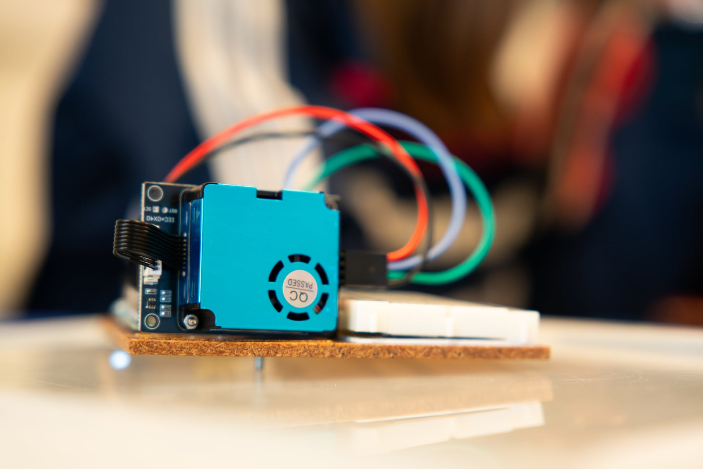

Predict
Students choose a place or situation and note what they expect to measure.
The Particulate Matter Project has students investigate air quality using a particulate sensor, Arduino and their own measurements.
Students choose a place or situation and note what they expect to measure.
The Arduino sends PM1, PM2.5, PM10 and AQI to the browser. The graph updates live.
Multiple measurements come together in an overview with averages, maxima and graphs.
The report bundles research question, measurement data, graph, conclusion and reflection.
Present your findings to the class in a public poster session.
The setup
Students connect the sensor, measure in a real environment and collect their own measurement results.

PM1, PM2.5 and PM10 become visible as concentrations in µg/m³.
Students compare average and maximum values instead of isolated measurement points.
A measurement location, measurement conditions and possible source are explicitly noted.
The PDF turns the measurement into a short research output that can be discussed.
Students process that output into a manageable poster.
Place in the learning path
The platforms build computational thinking. The projects use that thinking in a cross-curricular assignment in which students build, measure, test and conclude.
The web version works with real hardware or in demo mode. This lets you prepare the assignment, show it to the class and let students practise without every group immediately needing a working sensor.
This project does not use its own analytics or advertising cookies. Input, progress and measurement data are processed in the browser and may be stored locally on the device. A download or export occurs only when the user initiates it. Connected hardware is accessed only after permission is given in the browser. GitHub Pages logs visitors’ IP addresses for security purposes; external services are governed by their provider’s privacy policy.
Original project material by Robbe Wulgaert may be used, copied and adapted free of charge for education, provided that ‘Robbe Wulgaert – AI in de Klas’ is clearly displayed, where reasonably practical with a link to the original project. Commercial sale, paid distribution, sublicensing or repackaging as a commercial product is not permitted without prior written permission. Other uses outside education also require prior written permission. Third-party components remain subject to their own licences.